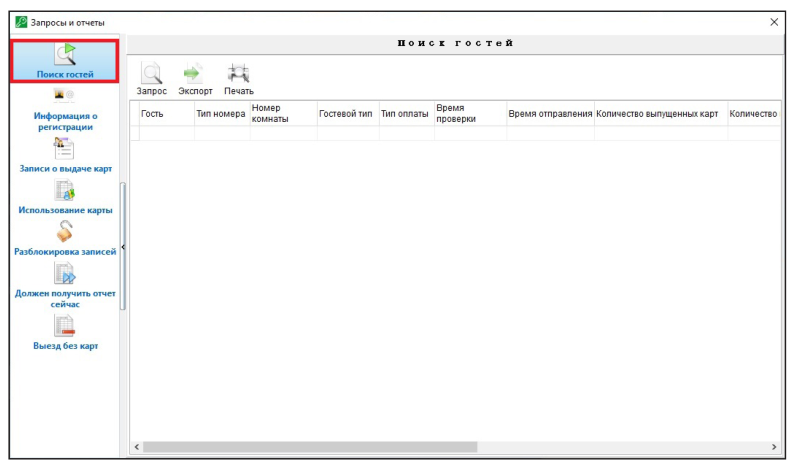
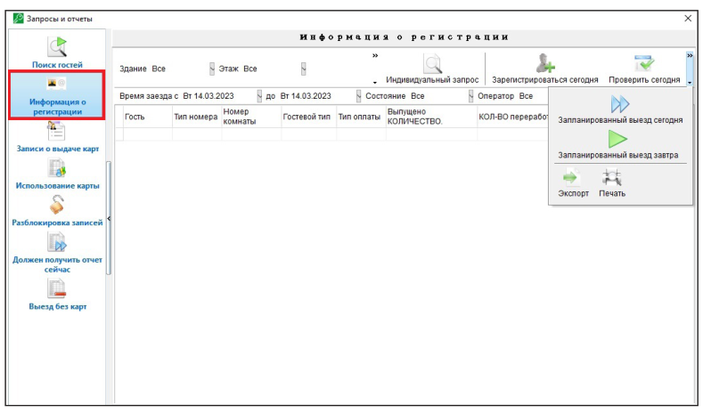
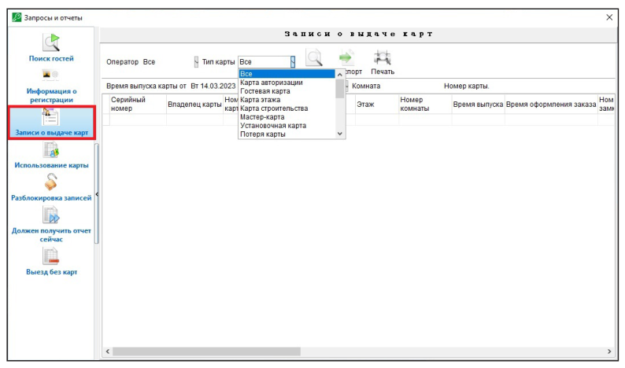
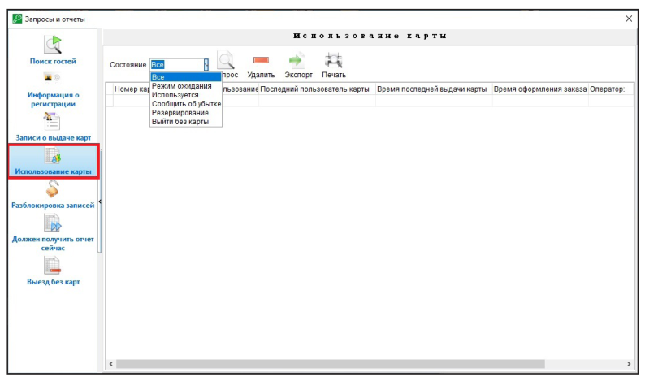
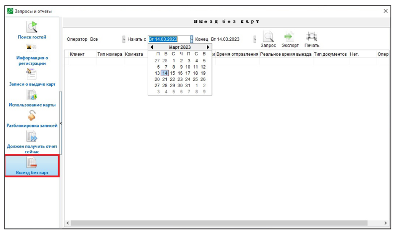
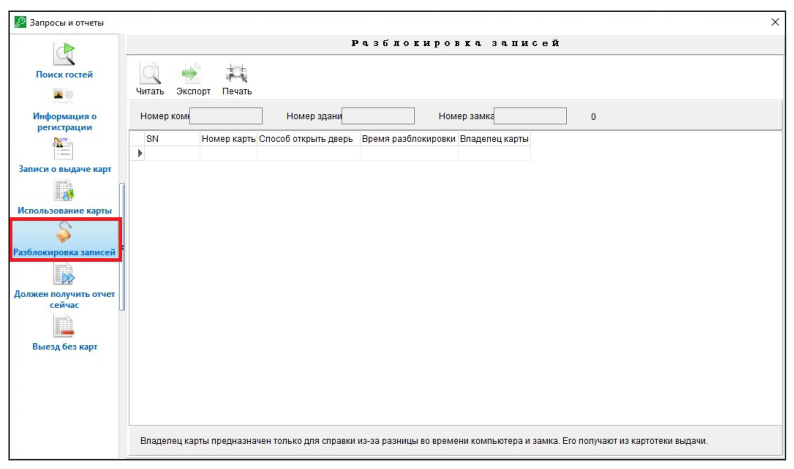

Отчёты
Руководство пользователя · Электронные замки Novilock™ Classic Slim


ОТЧЕТЫ
Поиск гостей В меню выберите Запросы и отчеты, далее Поиск гостей и нажмите Запрос для отображения всех гостей проживающих сейчас в комнатах (Рис. 52).
Информация о регистрации В меню выберите Запросы и отчеты далее Информация о регистрации укажите период за который хотите посмотреть информацию и нажмите Запрос, можно посмотреть отдельно регистрацию за текущий день. Тут можно посмотреть запланированные выезда на сегодня и на завтра (Рис. 53).


Записи о выдаче карт В меню выберите Запросы и отчеты далее Записи о выдаче карт, укажите период за который хотите посмотреть информацию и нажмите Запрос. Если нужно посмотреть записи о выдаче служебных карт укажите Тип карты. Дополнительно можно посмотреть выпуск карт по операторам, для это выберите Оператора из списка (Рис. 54).
Отчет об использовании карт В меню выберите Запросы и отчеты далее Использование карт, и нажмите Запрос для просмотра карт, если нужно посмотреть дополнительно состояние карт можно выбрать Состояние из списка (Рис. 55).

Отчет о выезде без карты В меню выберите Запросы и отчеты далее Выезд без карты, и нажмите Запрос. Дополнительно можно фильтровать записи по операторам и по дате, для это выберите Оператора из списка и укажите дату (Рис. 56).
Информация проходах в замке можно получить с помощью карты данных Создайте карту данных, в главном меню выберите Специальные карты далее выберите Карта данных затем выберите владельца из списка, нажмите выдать, карта успешно выдана (карту можно создать только на Mifare 4K S70). Поднесите данную карту к датчику замка. Удерживайте карту у датчика замка на протяжении 20 секунд, пока не перестанет мигать индикатор и не раздастся сигнал. Поместите карту обратно в энкодер. В меню выберите Запросы и отчеты далее Разблокировка записей, и нажмите Читать.
Обратите внимание
Максимальное количество записей, которые могут хранить ся на карте данных: 338.

Информация о событиях в замке можно получить с помощью программатора замков Включите программатор замков, перейдите в меню Lock Maintenance, далее выберите пункт Unlocking records, после чего перейдите в пункт Reading via RF. Подведите датчик программатора к замку для сбора данных. Удерживайте устройство в таком положении приблизительно 20 секунд. При успешном сборе данных загорится индикатор. Если при сборе данных произошла ошибка, загорится красный индикатор, в этом случае попробуйте повторить действие. После завершения сбора данных выберите пункт PC Synchronization и подключите мобильное устройство к компьютеру через USB-порт. В меню выберите Запросы и отчеты далее Разблокировка записей, и нажмите Читать.
Обратите внимание
Максимальное количество записей, которые могут храниться на программаторе замков: 992 (Рис. 58).